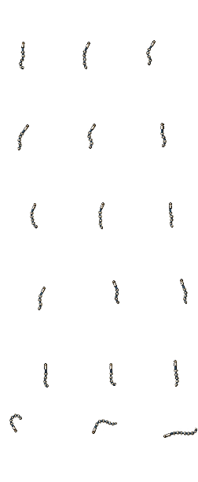

Bone handle, exposed vertebrae and muted blue connective flesh. One scale across all frames; handles registered to sword-derived grips. Existing 64×102 / 84×102 canvases retained.
Isolated equipment preview, not a character composite. Body/hand occlusion and final lash timing still need in-game verification. Not installed.

